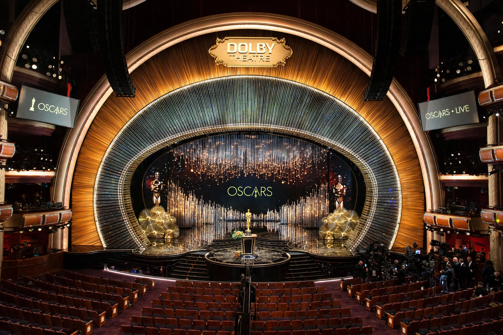

89th Academy Awards

| Date | 26 February 2017 |
|---|---|
| Venue | Dolby Theatre, Hollywood, Los Angeles |
| Host | Jimmy Kimmel |
| Best Picture | Moonlight |
| Most awards | La La Land (6) |
| Most nominations | La La Land (14) |
| Network | ABC |
The 89th Academy Awards ceremony, presented by the Academy of Motion Picture Arts and Sciences, honoured the best films of 2016 and took place at the Dolby Theatre in Hollywood, Los Angeles, on 26 February 2017. The ceremony was hosted by comedian Jimmy Kimmel.
The envelope mix-up
The ceremony is best remembered for an unprecedented error in the announcement of Best Picture. Presenters Warren Beatty and Faye Dunaway were handed the wrong envelope — a duplicate of the Best Actress card — and Dunaway announced La La Land as the winner. The La La Land producers had begun their acceptance speeches before stagehands and producer Jordan Horowitz revealed that the true winner was Moonlight, holding the correct card up to the cameras. The accounting firm PricewaterhouseCoopers, which had tabulated the results for 83 years, apologised and accepted responsibility.
Winners
Moonlight, directed by Barry Jenkins, won Best Picture, Best Supporting Actor (Mahershala Ali) and Best Adapted Screenplay. Damien Chazelle won Best Director for La La Land, becoming the youngest winner in the category at 32; the film won six awards from a record-tying fourteen nominations. Casey Affleck won Best Actor for Manchester by the Sea and Emma Stone Best Actress for La La Land. Viola Davis won Best Supporting Actress for Fences.
See also: Academy Awards · Moonlight (2016 film)